DSSE Workbench
Distribution System State Estimation workbench: network modelling, power flow, weighted least squares state estimation, bad data analysis, measurement chain simulation and multi-agent estimation, in a single desktop application.
- Audience
- Engineers and researchers using the application; no prior familiarity with the source code is assumed.
- Screenshots
- captured from the running application
- Institution
- Université Grenoble Alpes · CNRS · G2Elab
Contents
1About this manual
This manual describes how to operate the DSSE Workbench. It is organised in the order in which the application is normally used: the network is defined first, a power flow establishes the reference state, the estimator is run on measurements derived from it, and the remaining chapters cover bad data analysis, the measurement chain, the operator view and the multi-agent framework.
Each chapter states the purpose of the corresponding tab, shows the relevant part of the interface, and lists the controls in the order in which they are used. The numbers in each procedure correspond to the numbered marks on the figure beside it.
Screenshots and marks are produced automatically from the running application, so they correspond to the interface as built, not to a redrawing of it. Chapter 16 describes how they are regenerated.
2What the application does
The workbench reproduces the complete path between an electrical network and an operational decision: the field measurement, the RTU that maps it to a telemetry point, the communication channel that delays or drops it, the SCADA real-time database that stamps it with quality and age, the topology processor that decides whether a breaker is open or closed, the state estimator that solves the weighted least squares problem on the resulting measurement vector, and the optimal power flow computed on the estimated state.
The purpose is not only to obtain a state estimate, but to make visible what each layer did to the data before the result was produced. Every stage can therefore be perturbed, with measurement noise, gross errors, line parameter errors, falsified breaker status or a compromised RTU, and the consequence observed downstream.
The application runs entirely on the local machine. The backend is a Python process (FastAPI, pandapower, OpenDSS) and the interface is served locally by it. No measurement or network data leaves the computer; the only network access is the check for application updates.
2.1Tabs and their roles
| Tab | Role |
|---|---|
| Topology | Defines the network: test system, buses, lines, meters and switch status. All other tabs operate on it. |
| Power Flow | Solves the network without measurements. Provides the reference state. |
| State Est. | Runs the estimator alone, on measurements generated from the reference state. |
| Bad Data | Detection, identification and correction of gross errors and line parameter errors. |
| Workbench | Runs power flow, estimation and bad data detection in sequence and compares them. |
| Pipeline | The full measurement chain with every layer exposed, and fault injection per layer. |
| Console | The same chain presented as a control room display. |
| Agents | Distributed estimation over network partitions, with cross-layer agents. |
| Help | Reference documentation: algorithms, equations, sensor classes, glossary, case studies. |
3Installation and startup
3.1Installed application (Windows)
- Download the installer from the most recent release and run it. Python and Node.js are not required: the backend is bundled inside the application.
- Start DSSE Workbench from the Start menu. The application starts its own backend on a local port and loads the interface.
- When a new version is available, an update banner appears at the top of the window. Accepting it downloads and installs the update.
3.2Development environment
On a machine with the repository cloned, the virtual environment created and the frontend dependencies installed:
.\scripts\run_app.ps1 (or scripts\run_app.bat)The script starts the backend on port 8000 and the frontend development server on port 5173, and opens a browser on the interface. Closing both terminals stops the application.
Changes to the application source do not reach installed copies on their own. An installed application only sees a change after a release is published, which requires the version number in the Electron package manifest to be increased and a matching tag pushed. Committing alone publishes nothing.
4The application window
The header is the only part of the window that does not change between tabs.
- Tab bar. Nine tabs in a fixed order. The active tab is highlighted. Switching tabs does not discard results already computed in the previous one.
- Search docs (Ctrl+K). Searches the built-in reference from any tab. Selecting a result opens the corresponding topic in the Help tab.
- Active network. Shows the network currently loaded. It applies to every tab, is selected in the Topology tab, and is retained between sessions.
5Defining the network
Tab: Topology. Everything defined here (network, bus and line data, meters, switch status) is used by every other tab, and is retained when the application is closed.
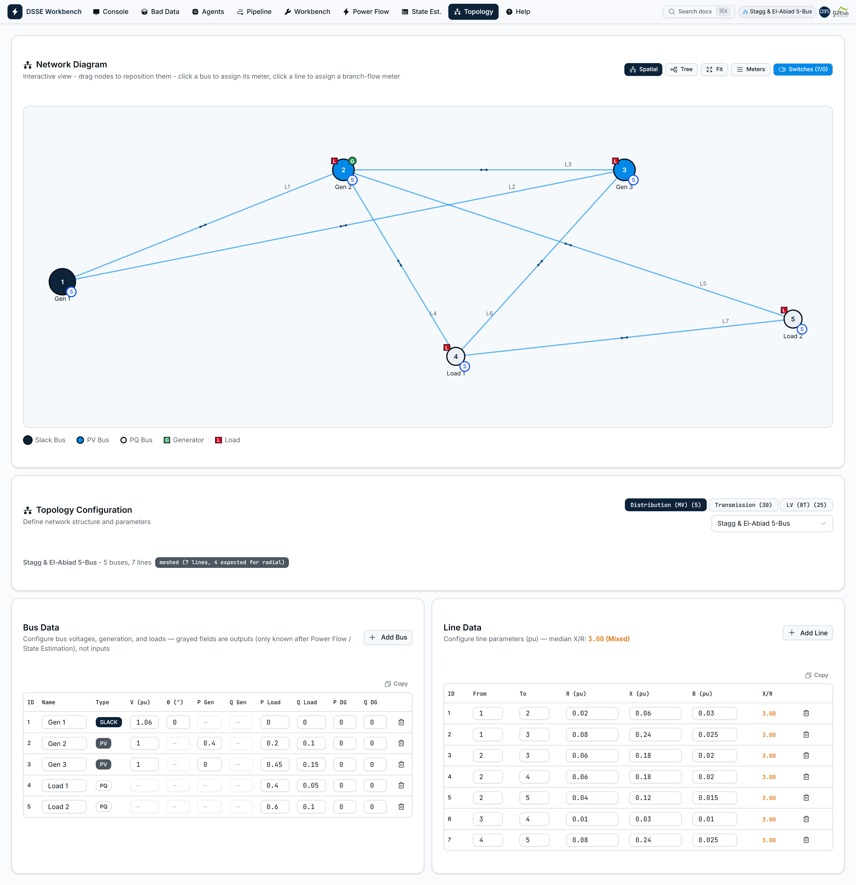
5.1Selecting a test system
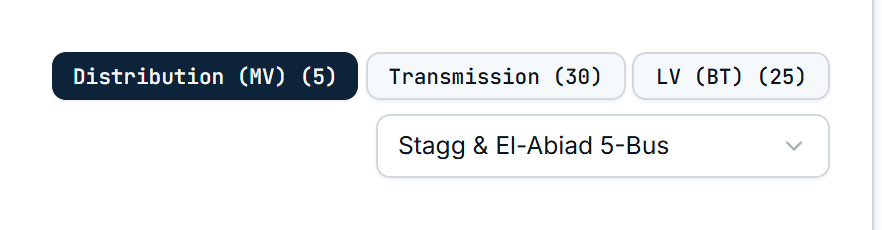
- Built-in systems. Includes the Stagg and El-Abiad 5-bus system (the default), the IEEE 14-bus system and the IEEE 39-bus New England system. The 5-bus system is small enough for results to be verified by hand and is the recommended starting point.
- pandapower cases, grouped by voltage class: distribution (medium voltage), transmission and low voltage. These are built by the backend when selected, so large cases take a few seconds to load.
5.2The network diagram
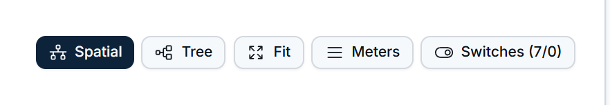
- Spatial view: buses at their coordinates, as in a single-line diagram. Nodes can be dragged to improve readability.
- Tree view: the same network drawn as a radial feeder, from the source downwards. Useful on distribution networks.
- Fit re-frames the diagram without discarding the current layout.
- Meters opens the measurement assignment panel (section 5.3).
- Switches opens the switch panel and reports the number of closed and open switches (section 5.4).
The diagram follows the usual convention for feeder figures: buses are nodes, branches are edges, voltage is mapped to node colour and loading to edge width. Clicking a bus assigns a meter to that bus; clicking a line assigns a branch-flow meter.
5.3Assigning meters
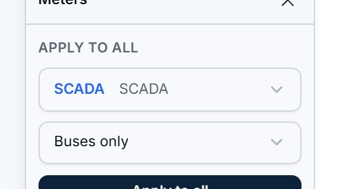
- Apply to all. Assigns one measurement class to a whole group at once, rather than bus by bus.
- Measurement class and target. The class determines the accuracy used by the estimator; the target restricts the assignment to buses, to lines, or to both.
- Individual assignment. Each bus and each line can be given, or denied, a meter individually. A dash indicates an unmeasured element.
The measurement set determines whether the network is observable and which measurements are critical. Removing a single meter can make a measurement critical, meaning its error becomes undetectable. The Critical Measurements & Observability topic in the Help tab describes the criterion.
5.4Switch status
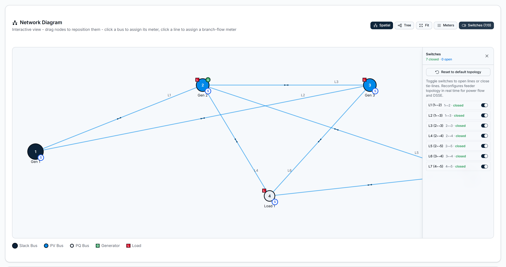
Switches can be opened and closed from this panel or from the symbols on the diagram. Reconfiguring the network changes which buses are energised and therefore changes every subsequent result.
In the Pipeline and Console tabs, switch status is not a boolean but a double-bit value, following the DNP3 and IEC 61850 convention: 0 intermediate, 1 open, 2 closed, 3 indeterminate. Codes 1 and 2 are conclusive readings; 0 and 3 are not. The distinction that matters operationally is conclusive against inconclusive, not open against closed.
5.5Bus and line data
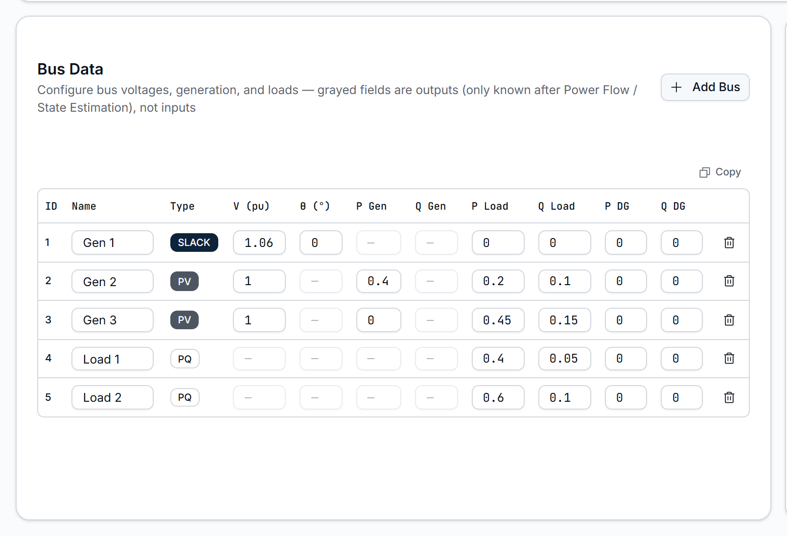
- Bus table. Voltage, angle, generation and load per bus. Greyed fields are outputs, not inputs: they are only known after a power flow or an estimation and cannot be edited. A PQ bus never takes a voltage setpoint, a PV bus never takes an angle, and reactive generation is always the quantity left free.
- Add Bus appends a bus to the network. New buses must be connected by a line before the network can be solved.
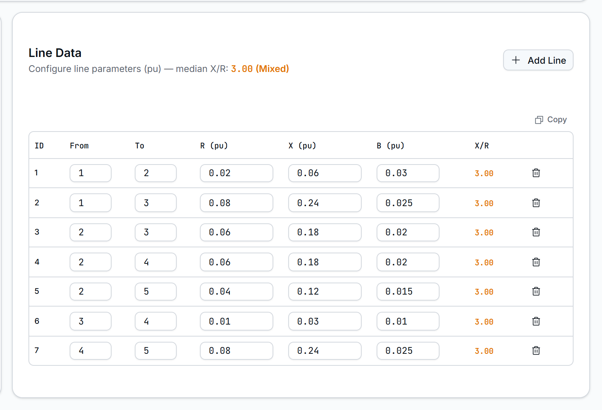
- Line table. Terminals and series impedance of each branch. The R/X ratio is reported, because it determines whether the DC approximation is acceptable on this network.
- Add Line appends a branch between two existing buses.
The edited network is stored and reloaded the next time the application starts. To return to a known state, reload one of the built-in systems from the selector in section 5.1.
6Running a power flow
Tab: Power Flow. Solves the network with no measurements and no estimator. The result is the reference state against which estimation results are compared.
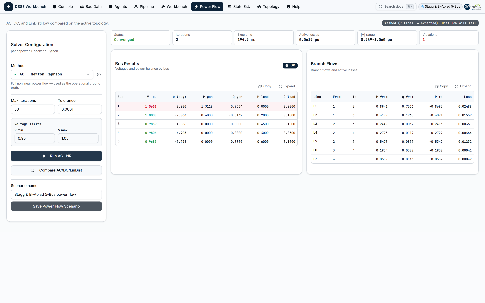
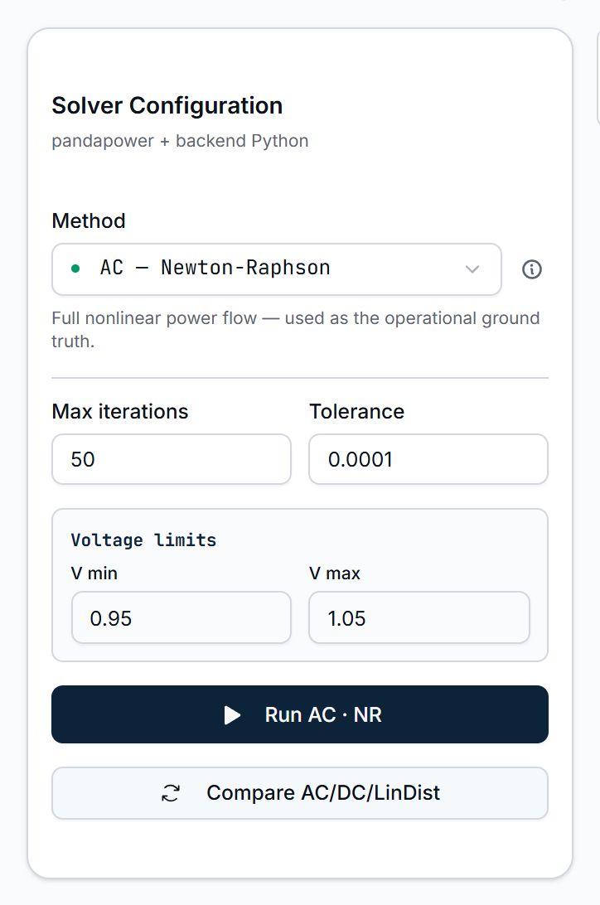
- Method. AC Newton-Raphson, linearised DC, or LinDistFlow.
- Method description. States the assumptions of the selected method and the conditions under which they cease to hold.
- Convergence settings. Maximum iterations and tolerance, plus the voltage limits used to flag violations in the results.
- Run. Solves the network and fills the result tables.
- Compare AC/DC/LinDist. Runs all three methods and reports the error of each against the AC solution.
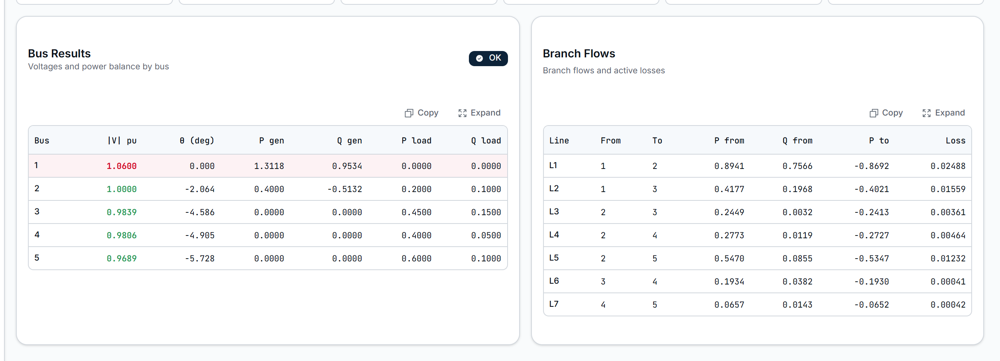
- Bus Results. Voltage magnitude, angle, generation and load per bus, with the convergence status shown beside the table.
- Branch Flows. Active and reactive flow and loading per branch. Every table in the application has a copy control that places its contents on the clipboard in a form that can be pasted into a spreadsheet.
LinDistFlow assumes a radial network and may fail to converge on a meshed one. That outcome is expected behaviour, not a defect, and is one of the reasons the comparison exists.
7Estimating the state
Tab: State Est. Runs the estimator in isolation: measurements are generated from the reference state, noise is added, and the state is reconstructed from them.
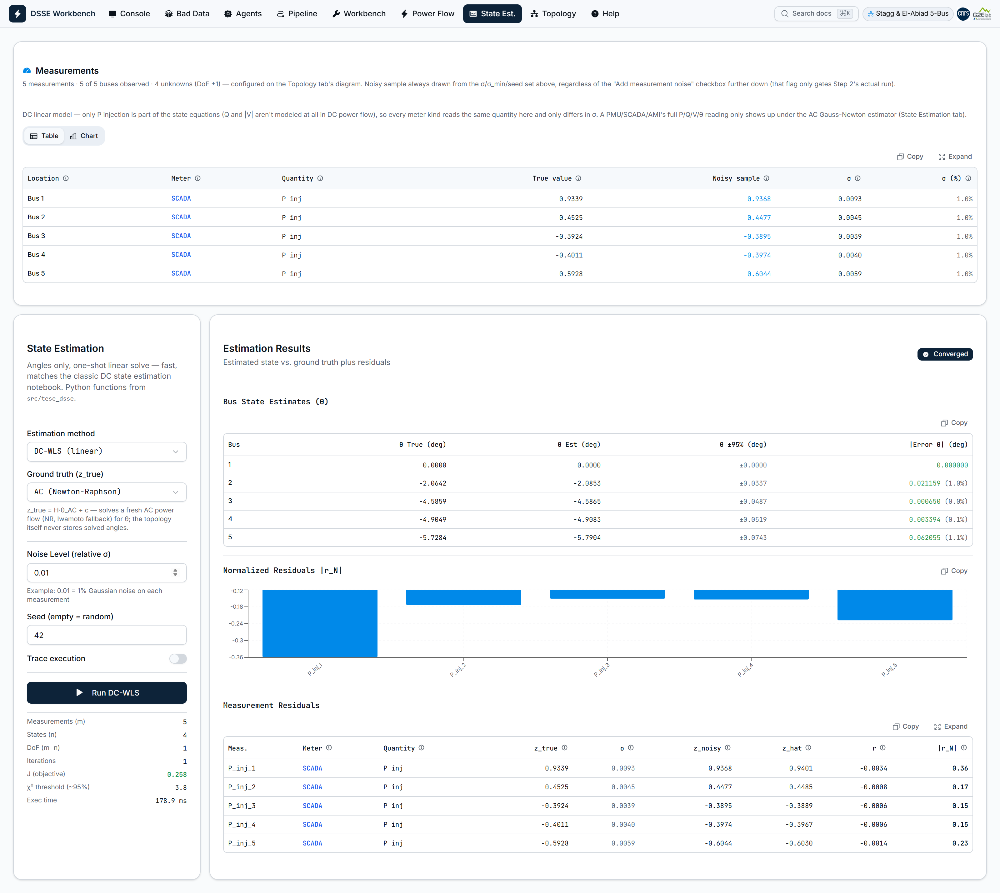
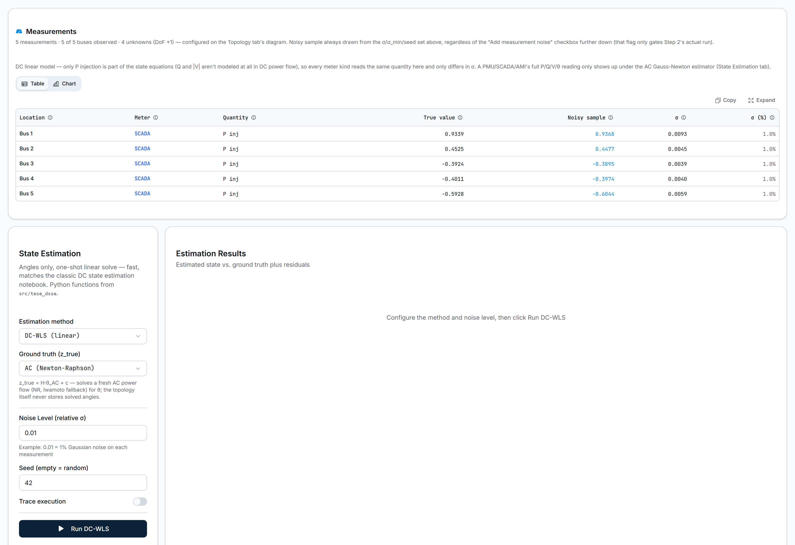
- Estimation method. DC-WLS solves a single linear system for bus angles. AC uses Gauss-Newton iterations over voltage magnitudes and angles.
- Ground truth. Selects the reference state from which the measurement vector is generated. This is what makes the comparison against a known state possible.
- Noise level. The relative standard deviation applied to the measurements.
- Seed. With a fixed seed the run is exactly reproducible; left empty, each run draws a new noise realisation.
- Trace execution. Enables the step-by-step execution panel, which reports each iteration and the intermediate matrices. It is slower and is intended for study and verification.
- Run. Solves and fills the result panel.
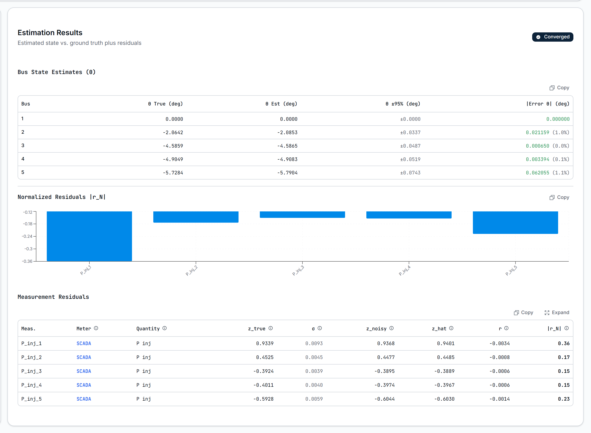
- Bus State Estimates. The estimated state beside the ground truth, with the deviation per bus.
- Measurement Residuals. Normalised residuals per measurement, together with the objective function history, which should decrease and then flatten. A residual history that does not settle indicates that the measurement set, and not the solver, is the problem.
Fix the seed whenever two configurations are being compared. Without it, part of the difference observed between two runs is only the noise realisation.
8Bad data analysis
Tab: Bad Data. Detection, identification and correction of gross measurement errors and line parameter errors, in the geometric formulation of Bretas. The procedure has four stages and they are performed in order.
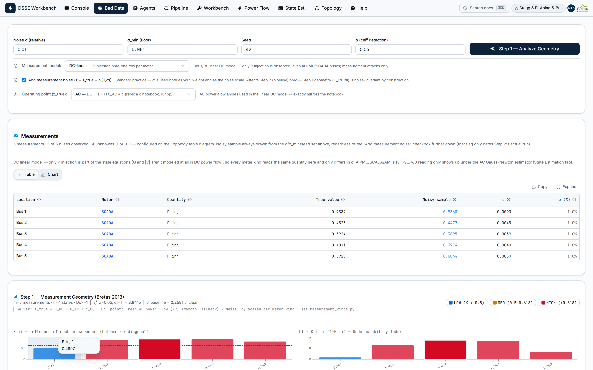
8.1Stage 1: measurement geometry
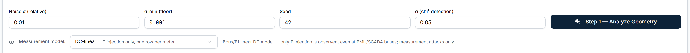
- Noise σ and the σ floor, which set the measurement accuracy assumed by the estimator.
- α. Significance level of the chi-square detection test.
- Measurement model. DC-linear, with one row per meter, or AC → DC, which reproduces the reference notebook. Parameter attacks require the AC model.
- Analyze Geometry. Computes the geometry of the measurement set before any error is injected.
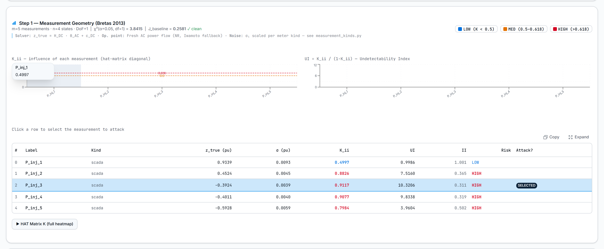
The table reports, per measurement, the diagonal of the hat matrix (Kii), the undetectability index, the innovation index and the degrees of freedom of the test. It identifies, in advance, which measurements are able to hide an error. Select a row to use that measurement as the attack target in the next stage.
8.2Stage 2: configuring the error
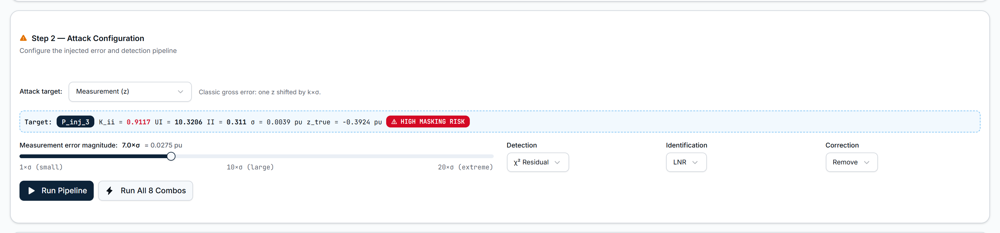
- Attack target. A measurement, a line parameter, or both. The last two require the AC model. The summary beside the selector reports Kii, the undetectability and innovation indices, σ and the true value of the selected measurement, and warns when the masking risk is high.
- Error magnitude, in multiples of σ for a measurement error, or as a percentage of the parameter for a line error.
- Pipeline. Three independent choices: detection (chi-square on the residual or on the composed measurement error), identification (largest normalised residual, normalised composed error, or by line in the AC case) and correction (remove the measurement, replace it by its true value, or correct the line parameter). Identification by line combined with correction by parameter is the sequence that repairs the line instead of discarding valid data.
- Run Pipeline. Executes the selected combination.
- Run All 8 Combos. Executes the fixed 2×2×2 grid on the same injection, so that strategies are compared without changing the experiment underneath them.
8.3Stage 3: reading the result
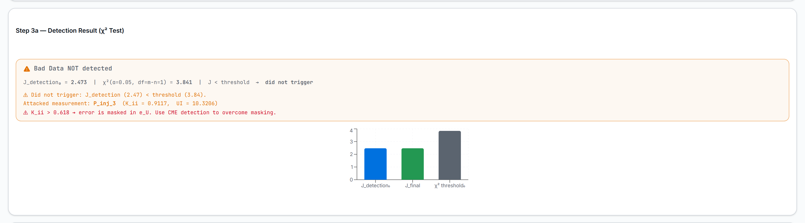
The result panel reports whether the chi-square test triggered, which measurement the identification step selected, whether that measurement is the one actually corrupted, and the state obtained after correction. Below it are the scatter plot of residuals (the corrupted measurement in red, false flags in orange), the hat matrix heat map, the complete per-measurement table and, for parameter errors, the line signature ranking and the corrected parameter.
The comparison against the true state exists only because this is a validation environment. In operation there is no true state available to decide a correction. A lower RMSE does not mean a more correct repair: a correction that discards the measurement can look numerically better while removing valid data and leaving the line parameters permanently wrong.
9Running several methods at once
Tab: Workbench. Runs power flow, state estimation and bad data detection as a chain of blocks and presents the results side by side.
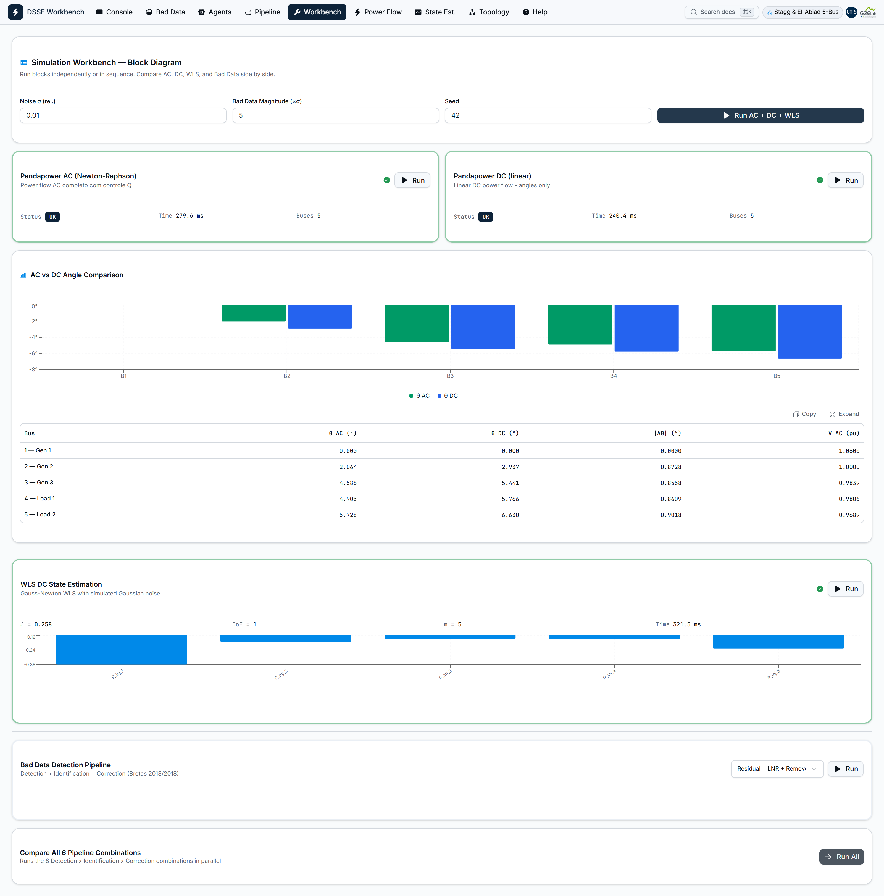
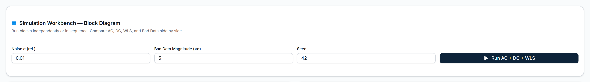
- Shared settings. Noise level, gross error magnitude and seed, applied to every block in the chain.
- Run AC + DC + WLS. Executes the chain in one step. Each block also has its own run control, which is the faster way to repeat a single stage after changing its input.
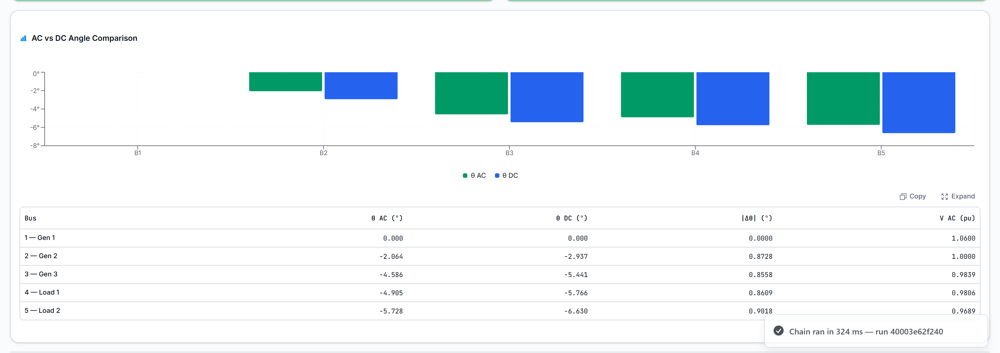
The comparison chart shows the bus angles obtained by both methods, which is the direct way to see where the linear approximation stops being valid on the network in use. The blocks below report the normalised residuals of the estimator and the outcome of the detection pipeline. Run All sweeps the pipeline combinations instead of a single one.
10The measurement chain
Tab: Pipeline. The complete chain from field to control action, with every layer exposed and its own result table, and with faults injected at the layer where they would actually occur.
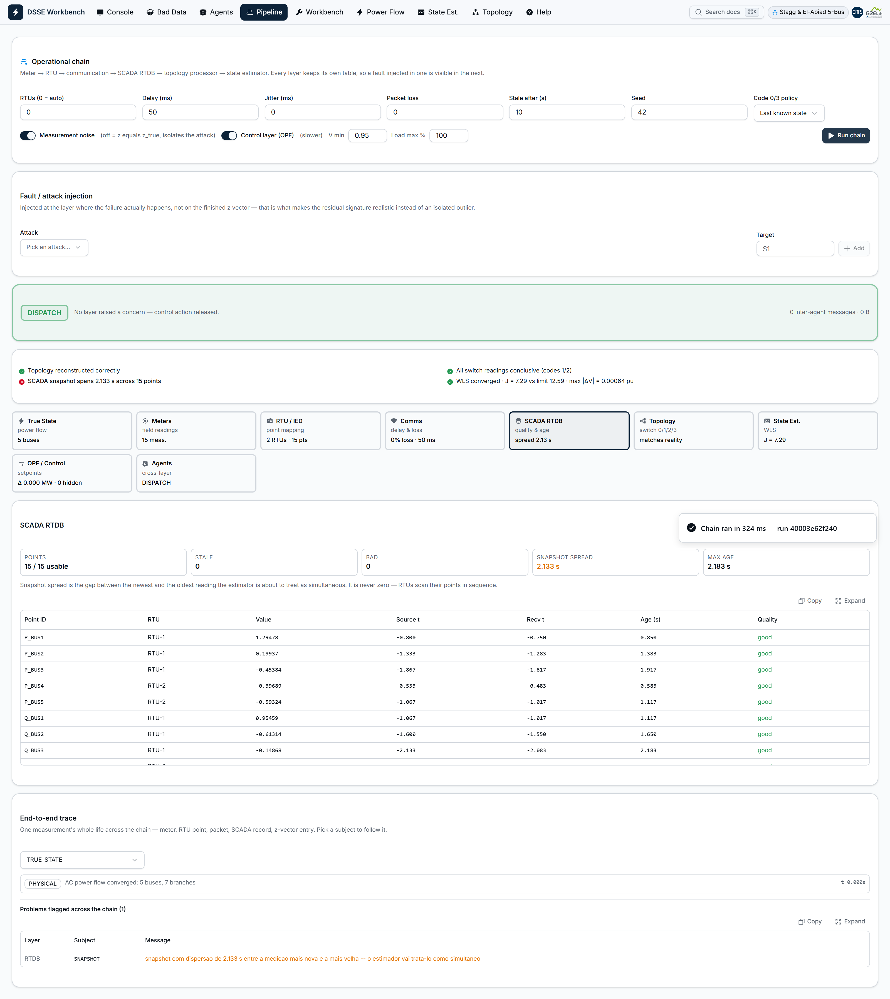
10.1Configuring the chain
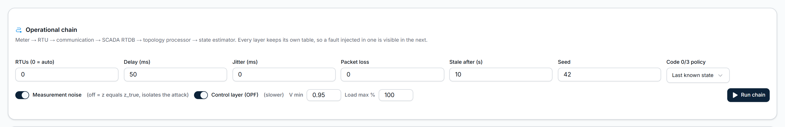
- Layer settings. Number of RTUs, base delay and jitter of the channel, packet loss rate, the age after which a point is considered stale, and the seed. Measurement noise and the control layer (OPF, with its voltage and loading limits) are enabled separately.
- Unknown switch policy. What the topology processor does with an inconclusive breaker reading: keep the last known state, assume closed, assume open, or infer the state from the measured flow.
- Run chain. Executes the chain end to end.
10.2Injecting a fault
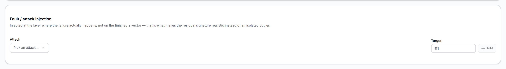
- Fault selection. Each fault has its own target (an RTU, a switch, a sensor) and its own parameters, which appear once it is selected.
- Add. Appends the configured fault to the list. Several faults can be active in the same run; Clear all empties the list.
Faults are injected at the layer where the failure would physically occur, not on the finished measurement vector. This is what makes the resulting residual signature realistic, instead of an isolated outlier that any detector would find.
10.3Following the data
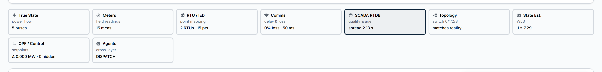
- Field and measurement layers. The true state and the readings taken from it.
- Estimation layer. Select any block to display that layer's own table below the strip; the strip stays visible, so the chain never leaves the screen.
- Control layer. The setpoints computed on the estimated state, and the violations that remain hidden when the estimate is wrong.
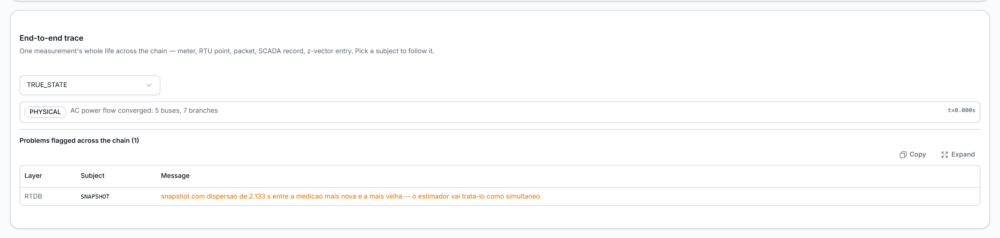
Selecting a measurement in the trace panel shows its complete life across the chain: the meter reading, the RTU point, the transmitted packet, the SCADA record and the entry in the measurement vector. Without it, a fault injected in the communication channel is visible only as a large residual.
11The operator view
Tab: Console. The same chain as Chapter 10, presented the way a control room would show it. It runs once automatically when the tab is opened.
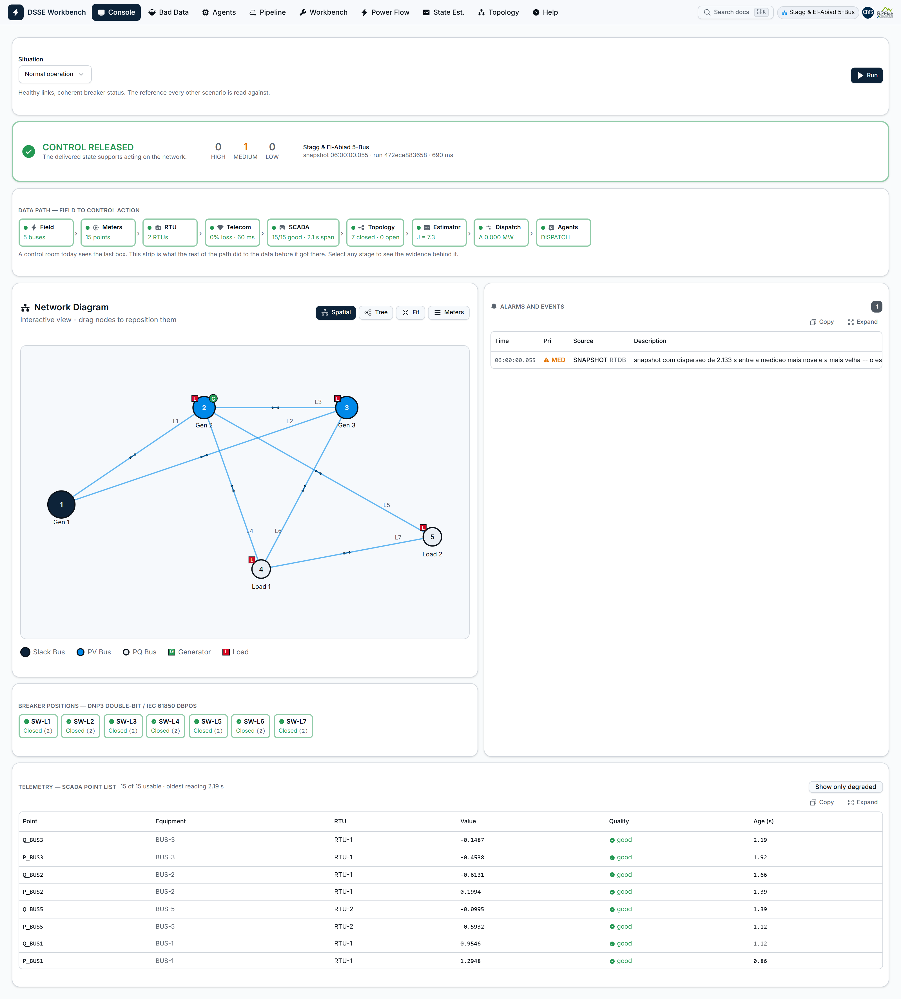
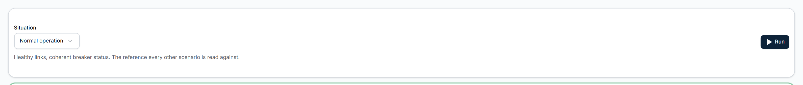
- Situation. Six predefined scenarios: normal operation, a degraded link on one RTU, packet loss on the network, a falsified breaker status, disagreeing breaker contacts, and a compromised RTU. Each carries its own settings and faults, so a situation can be demonstrated without configuring anything.
- Run. Executes the chain for the selected scenario.
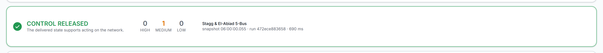
- Recommendation and alarm counts. Whether the delivered state supports acting on the network, with the number of alarms by priority.
- Run identification. Network name, snapshot time, run identifier and elapsed time. The snapshot time is the span of the measurement set, not a single instant.
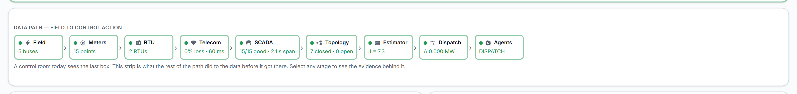
- Field and acquisition stages. Each stage carries its own severity colour and a summary figure.
- Estimator stage. Selecting any stage displays the evidence behind its colour immediately below the strip.
- Dispatch stage. A control room today sees only this last box. The strip shows what the rest of the path did to the data before it arrived there.
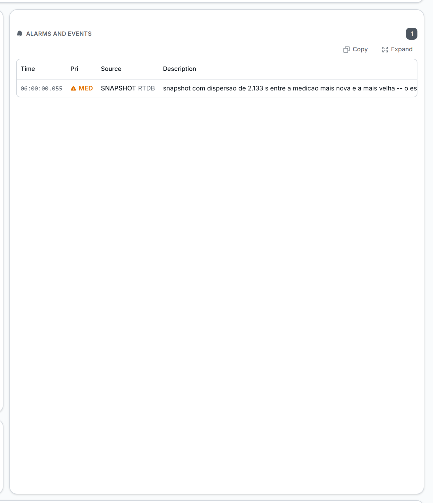
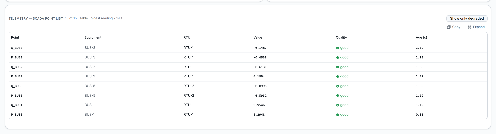
The alarm list is chronological, priority coded and names the source equipment. The telemetry list reports point identifier, equipment, quality flag and data age, which is where a stale value entering the estimator as if it were current becomes visible.
12Multi-agent estimation
Tab: Agents. The network is partitioned into islands, each island estimates its own portion, and agents exchange information across layers.
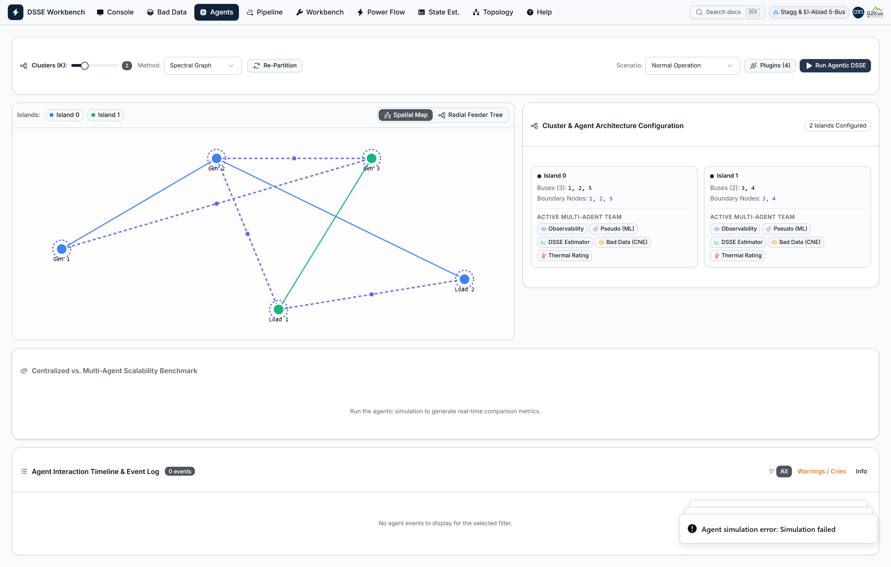
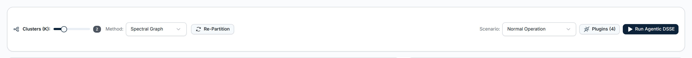
- Partition method. Spectral graph partitioning, or partitioning along radial feeders. The number of islands is set by the adjacent control.
- Re-Partition. Recomputes the partition. The partition is also recomputed automatically when the tab is opened or the network changes.
- Scenario. The situation simulated during the agent run, using the same set as the Console tab.
- Plugins. Opens the plugin manager, which is the extension point for adding agents without modifying the core.
- Run Agentic DSSE. Runs distributed estimation over the current islands. It is enabled only once a partition exists.
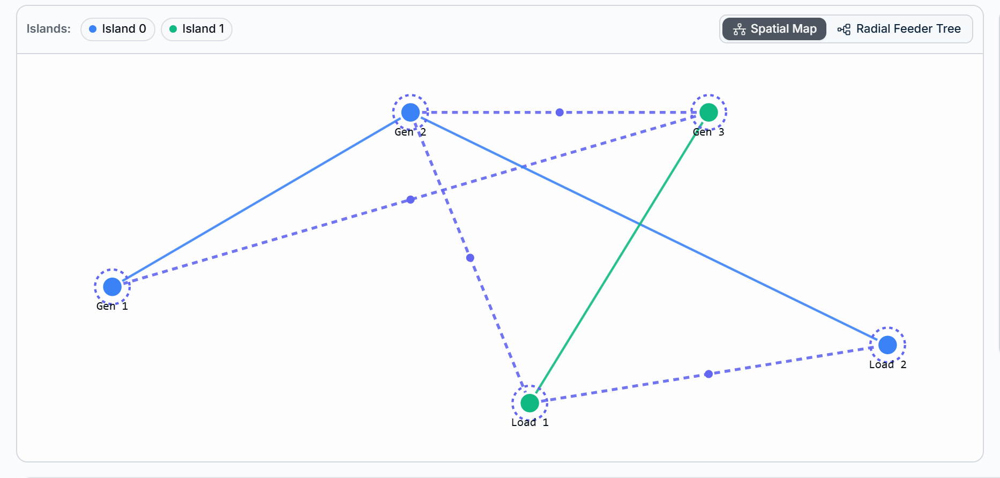
- Spatial map of the partitioned network, islands in distinct colours, with the boundary nodes marked.
- Radial feeder tree, the same partition drawn along the feeders.
- Island selection. Isolates one island at a time, to inspect what a single agent sees.
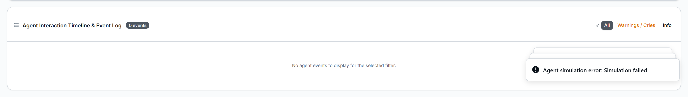
- All events, in chronological order, with the agent that emitted each one.
- Warnings and cries. The on-demand protocol by which an agent reports that it cannot produce a trustworthy result, instead of returning a silently wrong number. The benchmark panel beside the log compares the distributed run against the centralised one.
13Built-in reference
Tab: Help. The mathematical documentation of the methods implemented in the application.
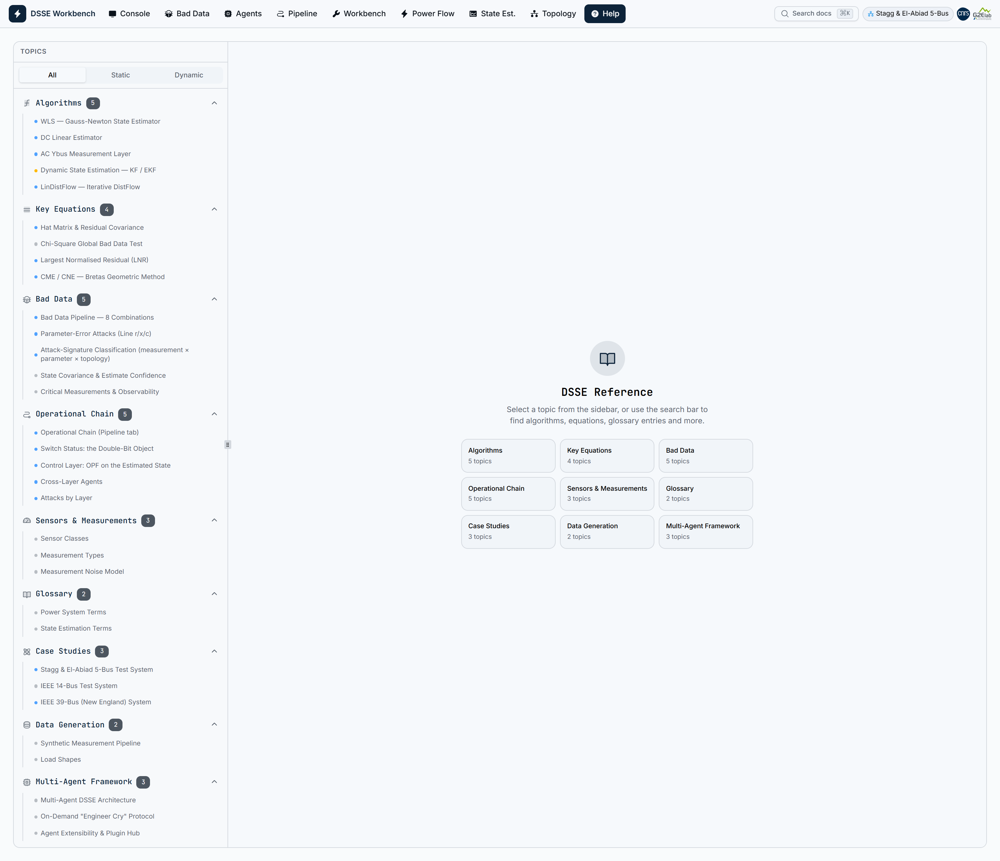
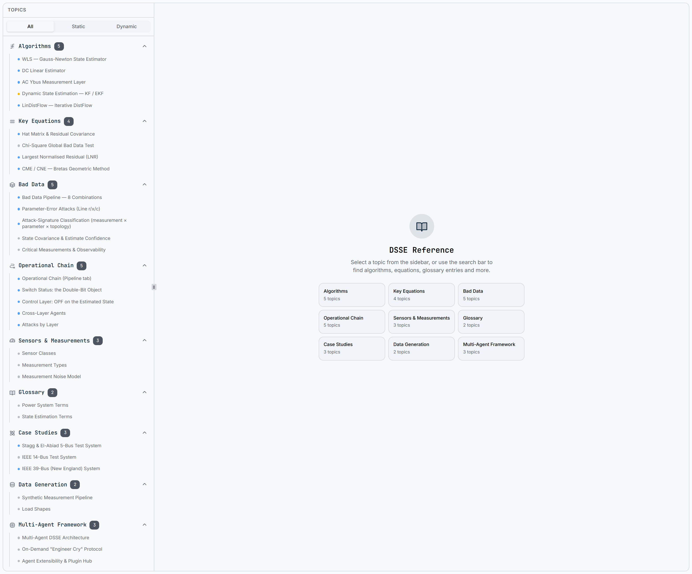
- Paradigm filter. All topics, static estimation only, or dynamic estimation only (Kalman and extended Kalman filtering).
- Categories, with the number of topics in each: algorithms, key equations, bad data, operational chain, sensors and measurements, glossary, case studies, data generation and the multi-agent framework.
- Topic. Each topic states the formulation with rendered equations, the assumptions and the references. Reaching a topic through the search palette (Ctrl+K) is usually faster than navigating the list.
14Conventions and shortcuts
| Element | Behaviour |
|---|---|
| Ctrl+K | Opens the documentation search from any tab. |
| Copy control on tables | Places the table contents on the clipboard, formatted for a spreadsheet or a notebook. |
| Information icon on columns | States what the column contains and how it was computed. |
| Method description control | States the assumptions and limits of the selected method. |
| Greyed input fields | Outputs, not inputs: quantities known only after solving. |
| Seed field | Empty means a new random draw on every run; a fixed value makes the run reproducible. |
| Diagram conventions | Buses as nodes, branches as edges, voltage as node colour, loading as edge width. |
| Switch status codes | 0 intermediate, 1 open, 2 closed, 3 indeterminate; 1 and 2 are the conclusive readings. |
15Troubleshooting
| Symptom | Cause and resolution |
|---|---|
| Every tab reports a connection error | The backend is not running. In a development environment, check the backend terminal; in the installed application, close and reopen it so that a new local port is selected. |
| A run control is disabled | A prerequisite step has not been completed. In Bad Data, the pipeline requires the geometry stage and a selected measurement; in Agents, the simulation requires an existing partition. |
| LinDistFlow does not converge | The method assumes a radial network. Expected on meshed networks. |
| Loading a large case takes several seconds | Expected: the network is built by the backend, and transmission cases contain far more buses than the 5-bus and 14-bus systems. |
| Results change between identical runs | The seed field is empty, so each run draws a new noise realisation. |
| The network is not the expected one after restart | The edited network is retained between sessions. Reload a built-in system from the Topology tab. |
16Maintaining this manual
The figures in this manual, and the position of every numbered mark drawn on them, are generated from the running application rather than written by hand:
.venv\Scripts\python.exe scripts\capturar_screenshots_app.pyThe script opens the application, visits each tab, performs the main
action of that tab, and crops the panel documented by each figure. It then
queries the document for the rectangle of every marked element and writes
those rectangles to coords.js, next to the images. This page
refers to each mark by name and converts the rectangle to a percentage of
the image, so figures and marks are always regenerated together.
Figures are cropped to the panel they document rather than captured as full pages, because this manual is also produced as a PDF and a full-page screenshot is several thousand pixels tall.
16.1Adding a new mark
- Add an entry to
MANUAL_FIGURESin the capture script, or a pin to an existing figure, giving a name and how to locate the element. - Reference that name in the
data-pinsattribute of the figure in this document, in the same order as the numbered steps beside it. - Run the script. A pin that no longer matches an element is not drawn and is reported in the figure caption, rather than silently pointing at the wrong place.
16.2Producing a PDF
Open this file in a browser and print to PDF with background graphics enabled, so that the marks and panel backgrounds are preserved. The page layout, the table of contents and the page breaks between chapters are defined for A4.